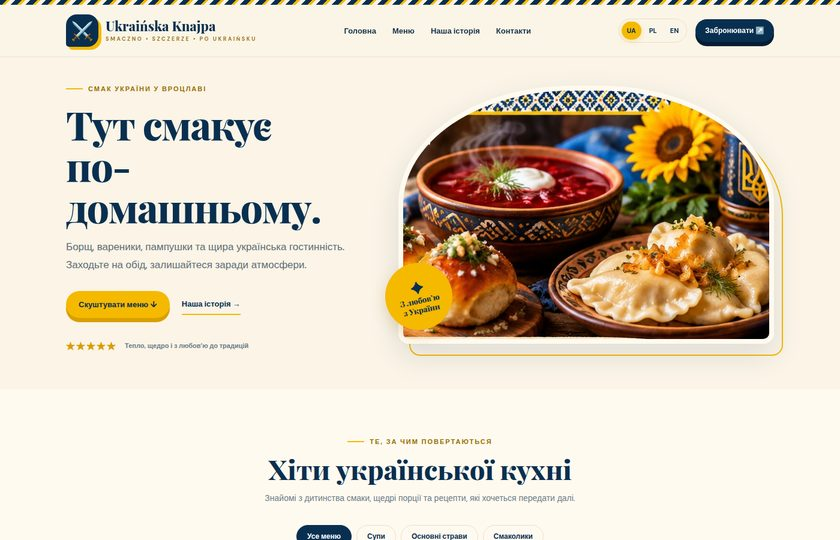
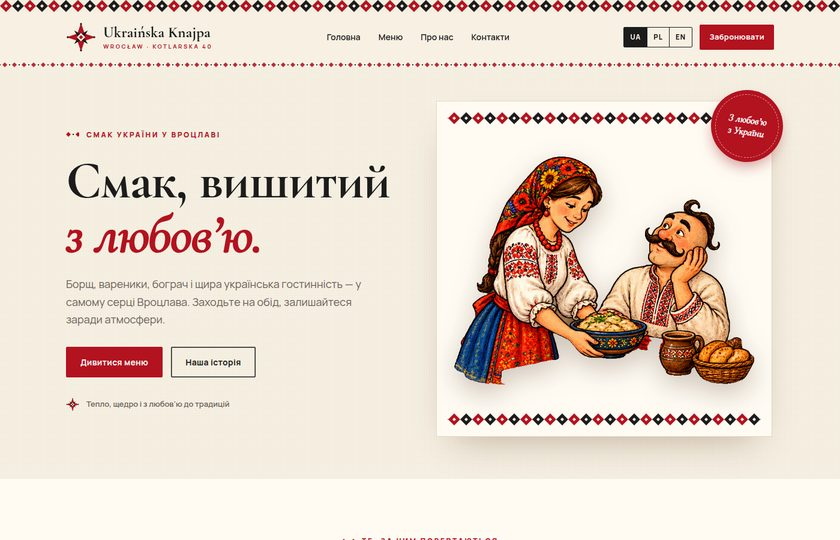
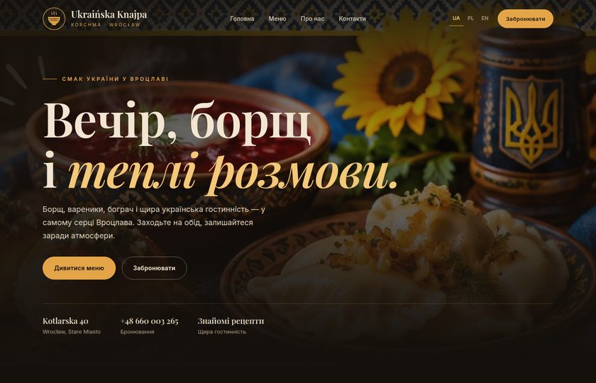
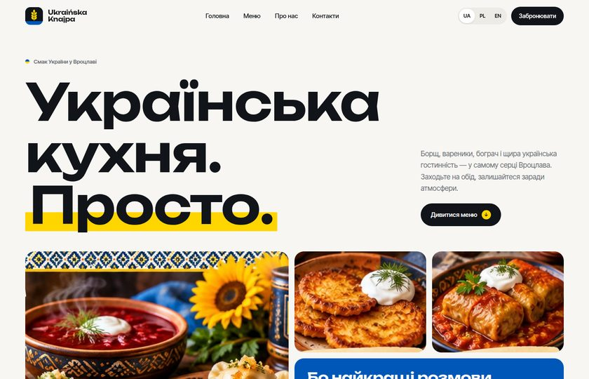
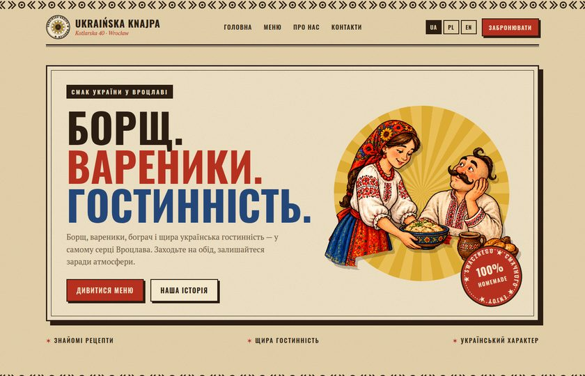
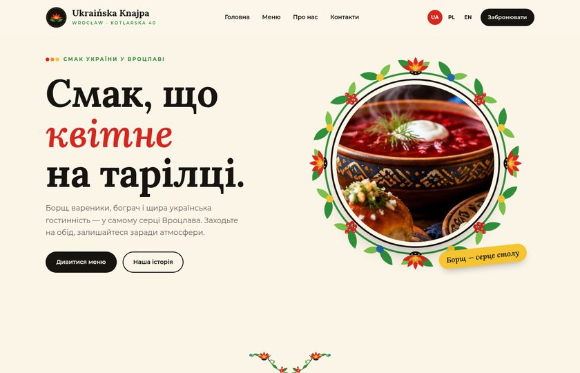
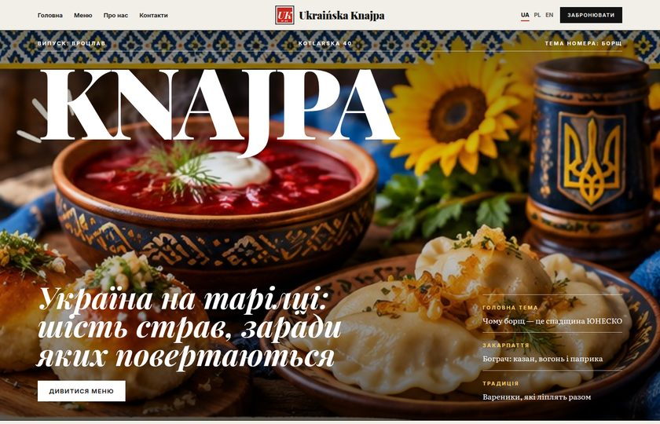
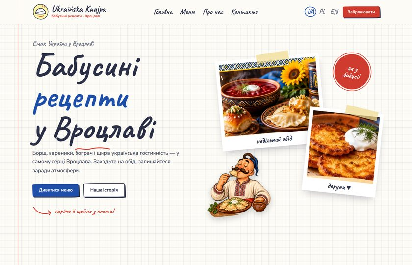
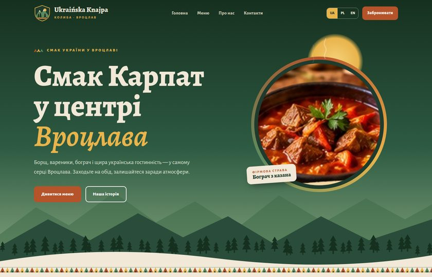

9 концепцій односторінкового сайту, кожна трьома мовами (UA / PL / EN — перемикач у шапці, вибір запам’ятовується). Kotlarska 40, Wrocław.

Поточний варіант: темно-синій і золото, теплий і привітний. Логотип — мечі.

Лляний фон, червоно-чорний орнамент-вишивка, ілюстрації з меню. Логотип — восьмикутна зірка-розетка.

Вечірній преміум: темне дерево, бурштинове світло, великі фото. Логотип — глиняна миска з парою в круглому бейджі.

Світлий, велика гротескна типографіка, бенто-сітка, синьо-жовтий як акцент. Логотип — колосок у заокругленому квадраті.

Крафтовий папір, шеврони як у паперовому меню, жирні плакатні шрифти. Логотип — кругла печатка із соняшником.

Яскравий український квітковий розпис: страви в круглих «розписних тарілках», вінки з квітів і калини. Логотип — квітка-петриківка.

Глянцевий журнал: обкладинка «KNAJPA», кожна страва — окремий розворот з історією (борщ і ЮНЕСКО, бограч із Закарпаття). Логотип — журнальний значок «UK № 40».

Зошит у клітинку, рукописний шрифт, страви — картки-рецепти з інгредієнтами, полароїди на скотчі, намальована мапа. Логотип — намальований вареник.

Гори, смереки, гуцульський орнамент, дерево. Головний акцент — бограч із казана. Логотип — щит із горами та смереками.